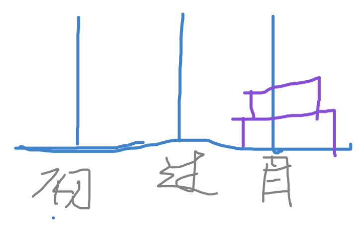
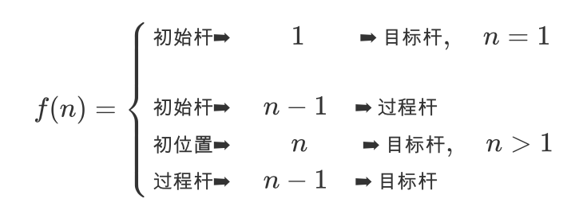

递归算法
从目前遇到的简单的递归算法来看，可以递归与分段函数等价，例如：
f(x)=⎩⎪⎨⎪⎧f(lnx),x>1ex−1,x≤1
在C++中的实现可以为：
#include<cmath>
double f(double x)
{
return x>1 ? f(log(x)) : exp(x-1);
}
|
又如斐波拉契数列在C++中可以用这样的方式实现：
int f(int x)
{
return x>2 ? f(x-1)+f(x-2) : x-1;
}
|
而用分段函数可以表示为：
f(x)=⎩⎪⎪⎪⎪⎪⎪⎨⎪⎪⎪⎪⎪⎪⎧0,x=11,x=2f(x−1)+f(x−2),x>2
那么，也就是说，对于递归函数的题，只要能写出他的分段函数表达式，就能实现这个函数。
汉诺塔

约19世纪末，在欧州的商店中出售一种智力玩具，在一块铜板上有三根杆，最左边的杆上自上而下、由小到大顺序串着由64个圆盘构成的塔。目的是将最左边杆上的盘全部移到中间的杆上，条件是一次只能移动一个盘，且不允许大盘放在小盘的上面。
这是一个著名的问题，几乎所有的教材上都有这个问题。由于条件是一次只能移动一个盘，且不允许大盘放在小盘上面，所以64个盘的移动次数是：18,446,744,073,709,551,615
这是一个天文数字，若每一微秒可能计算(并不输出)一次移动，那么也需要几乎一百万年。我们仅能找出问题的解决方法并解决较小N值时的汉诺塔，但很难用计算机解决64层的汉诺塔。
假定圆盘从小到大编号为1, 2, …
分段函数

代码实现
#include<iostream>
using namespace std;
void han(int n,char chu,char guo,char mo)
{
if(n==1) cout<<chu<<"->1->”<<mo<<endl;
else
{
han(n-1,chu,mo,guo);
cout<<chu<<"->"<<n<<"->"<<mo<<endl;
han(n-1,guo,chu,mo);
}
}
int main()
{
int n;
char a,b,c;
cin>>n>>a>>b>>c;
han(n,a,b,c);
return 0;
}
|